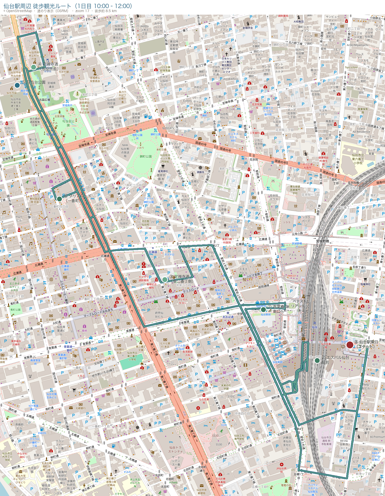

日程
8月9日 〜 8月11日
2泊3日
Overview
8月9日 〜 8月11日
2泊3日
レンタカー（コンパクト）
8/9 借りて 8/11 返却 · 仙台駅東口が運転しやすい
仙台駅周辺
1日目は仙台、2日目は鳴子温泉に宿泊
8/9 仙台 · 8/10 鳴子ホテル
仙台駅観光 / フルーツ狩り / 鳴子温泉 / 松島
スライド資料をもとにしたグループ旅行プラン
Day 1 · 8/9
10時に仙台駅東口のレンタカー店で集合。車は近くの駐車場に停め、定禅寺通・勾当台公園・一番町を巡る約2kmのループ散策。12時頃に東口へ戻って車を受け取ります。

徒歩ルート：仙台駅東口（レンタカー店） → 定禅寺通 → 勾当台公園 → 一番町・クリスロード → 仙台駅東口（レンタカー店）
仙台駅東口のレンタカー店で集合・手続き（8/9〜8/11・コンパクトカー）。借り出し後、徒歩圏の駐車場へ停めて観光スタート。
東口から駅ビル「エスパル仙台」を抜けて駅前を散策。ずんだシェイクや笹かまぼこなど、仙台の定番スイーツ・お土産をチェック。
東二番丁通から定禅寺通へ（駅から徒歩約10分）。杜の都を象徴するケヤキ並木と彫刻が並ぶ約1.4kmのシンボルロードを、市役所前付近までゆっくり歩きます。
定禅寺通から勾当台公園へ（徒歩1〜2分）。市民の森の像や勾当台神社を見学。イベント広場や緑地で一息つきます。
勾当台公園から北へ、仙台最大のアーケード街「クリスロード」を南北に抜けます。商店街を通って青葉通り方面へ向かい、東口へ戻るルートへ。
青葉通り経由で仙台駅東口へ。レンタカー店・駐車場に着いたら、停めておいた車を受け取り移動開始。
観光ループ完了。駐車場からレンタカーで移動し、2日目・3日目のドライブに備えます。
仙台で宿泊。夜は友人宅でボードゲームなど、のんびり過ごします。
Day 2 · 8/10
午前はフルーツパーク、午後は鬼首寒穴泉と鳴子ダムを経由して、夜は鳴子ホテルで温泉とバイキング。
旬のフルーツ狩り体験。事前予約が推奨されています。
開園 10:00〜15:00。CO₂が噴出する寒穴泉の自然現象を見学。
鳴子温泉方面へのドライブ途中、鳴子ダム周辺を立ち寄り。
湯色が変わる鳴子温泉の名湯宿。駐車場は予約不要・無料（100台）。
ホテル内レストランでバイキングディナー。源泉かけ流しの温泉も楽しめます。
Day 3 · 8/11
ホテル朝食の後、松島へ。日本三景の島々を眺めながら、石田屋で海鮮ランチ。
ホテルでバイキング朝食。
松島方面へ移動。泉ヶ岳方面を経由し、約1時間半のドライブ。
日本三景・松島の島巡りや散策。海の見える席で海鮮料理（うなぎ・牡蠣・あなごなど）を堪能。定休日なし。
8/9〜8/11のレンタカーを仙台駅付近で返却し、旅程終了。
Tips
8/9〜8/11の3日間レンタカー利用。仙台駅東口の店舗は運転しやすいとのこと。コンパクトカーで十分な行程です。
JRフルーツパーク仙台あらはまは予約優先。公式サイトの「フルーツ狩り・イベント予約」から事前申込がおすすめです（予約専用：022-290-0766）。
歯ブラシ・髭剃りは持参推奨（アメニティあり）。浴衣貸出あり、パジャマはお好みで。駐車場100台・無料・予約不要。
開園時間は 10:00〜15:00。2日目の午後訪問時は時間に余裕を持って向かいましょう。
東口レンタカー店 → 定禅寺通 → 勾当台公園 → クリスロード → 東口へ戻る約2kmループ。余裕を持てば11:45頃に東口付近、12:00にはレンタカー店・駐車場に着く想定です。歩きやすい靴で。
10時に借り出して近隣駐車場へ。12時まで徒歩観光の間はそのまま置いておき、戻ったらすぐ出発できます。返却時のガソリン量・利用時間の計算に注意を。